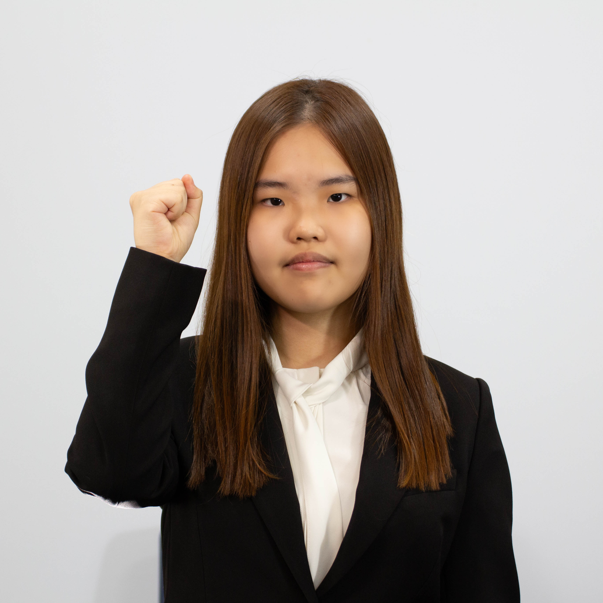

Chair Letter
Esteemed delegates, student officers, staff, and respected directors, welcome to KISMUN 2025! My name is Jua Lee, and I am deeply honored to serve you as the head chair of the United Nations Human Rights Council.
I still remember what it felt like to be a first-time delegate, sitting in the committee room with a placard in my hand, unsure when to speak and afraid that I might say something inappropriate, so I truly understand the anxiety that comes with stepping forward and finding the right words in a formal setting. But MUN is not about perfect speeches or flawless POIs. It is not a race for awards or titles. As for myself, I have attended six conferences so far and have never received an award, and there were moments when I felt left behind or discouraged. Still, what I gained was far more valuable than any certificate or award. I discovered my own voice, courage, and learned to value growth over recognition.
As the chair of a beginner committee, I am always in my position to support each of my delegates with patience and understanding. One of my priorities is to help you find the confidence to speak up, to ask questions, and to challenge yourself without fear. You are not expected to be perfect, but to be present, curious, and courageous. I hope that through this experience, you will come to understand what took me years to realize: that the true meaning of MUN lies in the journey, not the outcome. I look forward to seeing your passion, your ideas, and your willingness to grow throughout this conference. Remember, always follow where your courage leads you.
Warm regards,
Jua Lee,
Head Chair of United Nations Human Rights Council, KISMUN 2025.